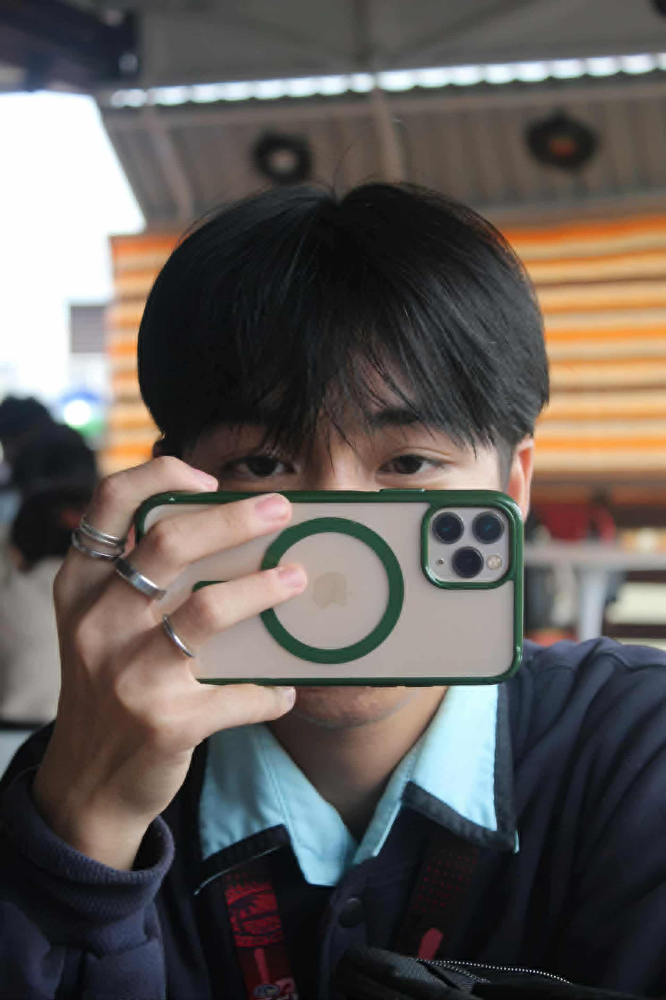

Kim Justin P. Reyes
Future Front-End Web Developer — builds websites (HTML, CSS, JS, UI/UX)
Hi! I’m Kim Reyes, an Information Technology student passionate about web development and design. I enjoy learning how technology can make life easier and more creative. My goal is to improve my coding skills and create modern, user-friendly websites.